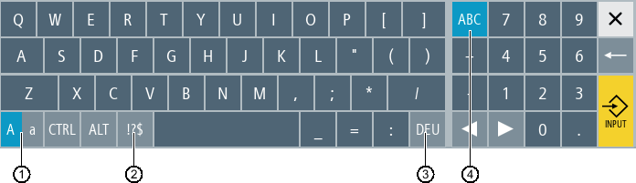

Die virtuelle Tastatur wird als Eingabegerät bei Touch-Bedienfeldern verwendet.
Durch Doppelklick auf ein eingabefähiges Bedienelement (Programmeditor, Editierfelder) öffnet sich die virtuelle Tastatur. Sie haben die Möglichkeit die virtuelle Tastatur innerhalb der Bedienoberfläche beliebig zu platzieren.
Sie haben die Wahl zwischen einer Volltastatur und einer verkleinerten Tastatur, die nur den Nummernblock umfasst. Bei der Volltastatur haben Sie Möglichkeit, die Tastenbelegung zwischen englischer und zur aktuell eingestellten Landessprache passender Tastaturbelegung umzuschalten.
① | Umschalttaste Groß- und Kleinbuchstaben |
② | Umschalttaste Buchstaben und Sonderzeichen |
③ | Umschalttaste zur landesspezifischen Tastaturbelegung |
④ | Umschalttaste Volltastatur und Nummerntastenblock |
Über die Taste <INPUT> werden die eingegebenen Werte übernommen.
Halten Sie die freie Fläche links neben dem Symbol für "Fenster schließen" mit Griffel oder Finger gedrückt. Schieben Sie so die Tastatur an den gewünschten Ort.